Animais Domésticos
São muito procurados, pois oferecem companhia para as pessoas de todas as idades. Os animais domésticos necessitam, de acordo com a espécie, de cuidados especiais. Quando adoecem ou necessitam de vacinas, devem ser levados ao médico especialista em animais: o veterinário.
Convém destacar que alguns animais são domésticos porque, no seu desenvolvimento histórico enquanto espécie, se adaptaram a conviver com os humanos e apresentam características bastante diferentes daquelas que apresentam os animais selvagens.
Cachorros
O cachorro é um mamífero quadrúpede (ou seja, anda sobre quatro patas) que se destaca por ter uma cauda e uma cobertura de pelos por todo o seu corpo.
Entretanto, hoje em dia, graças às diversas raças caninas existentes, encontramos cães de todos os tamanhos, formas e cores.
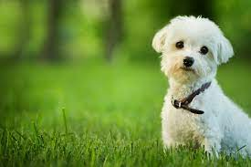 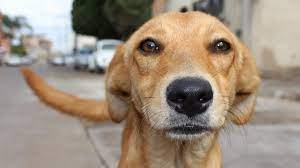 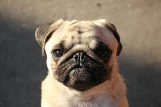Gatos
Os gatos são os animais de estimação mais populares de todo o mundo. Apesar de domesticados, os gatos partilham todas as características dos felinos selvagens dos quais são parentes: são fortes, ágeis, dotados de grandes reflexos, sentidos apurados e instinto de caça, além de possuírem a personalidade vincada e individualista que lhes é característica.
São brincalhões, muito independentes, curiosos e conseguem ser teimosos, mas são também extremamente amigáveis e afetivos.
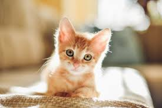 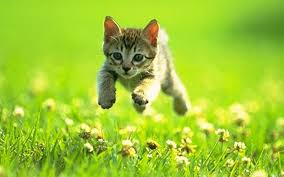 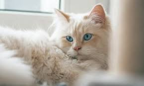Eleitores de Bolsonaro
O gado doméstico descende do auroque na Europa e do gauro na Ásia. Sua domesticação teve início há mais de 5 000 e 6 000 anos atrás. Os bovinos domesticado tinham várias serventias para o ser humano: como animal de carga (assim como a cabra e os cavalos) e a produção de leite em vida e carne/couro após a morte.
Eles se alimentam, principalmente, de pastagens, capins, fenos, cana-de-açúcar, e rações feitas de milho, sorgo, farelos, soja, dentre outros.
Boi é o nome dado ao bovino macho castrado, enquanto o bovino macho reprodutor é chamado de touro. O Brasil possui um dos maiores rebanhos do mundo.
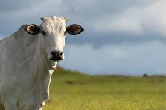 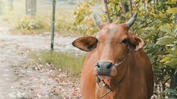 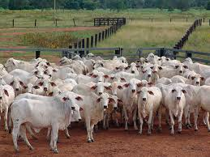 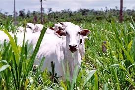Cavalos
Os cavalos são mamíferos quadrúpedes, do gênero Equus, que podem apresentar mais de 1,50 m de altura e pesar mais de 500 quilos. O cavalo é um animal mamífero que apresenta grande importância na história do ser humano. O cavalo é um animal mamífero da família Equidae e do gênero Equus.
Eles convivem com o homem há muito tempo, sendo que a domesticação da espécie ocorreu há 5.500 anos a.C. Portanto, representa um dos animais mais utilizados e de maior convívio com os humanos.
São animais herbívoros, por isso, é comum encontrá-los em pastos onde alimentam-se de capim e ervas. Um cavalo, na natureza, pode passar até 16 horas se alimentando durante o dia.
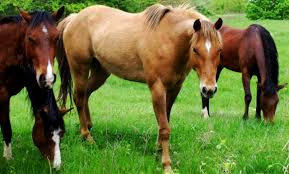 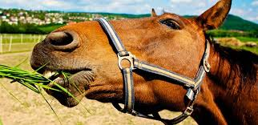 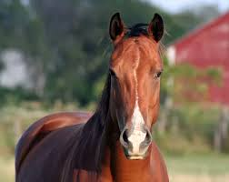 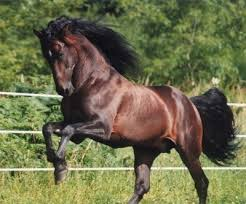Patos
Pato é o nome comum dado a algumas espécies de aves da família Anatidae, que compreende também os gansos e marrecos.
São aves que habitam corpos d´água, como margens de rios, lagos, pantanais e áreas alagadas. Poucas espécies, como o pato-do-mato (Cairina moschata), podem ser encontrados em rios próximos à orla do mar.
São animais onívoros e se alimentam preferencialmente de vegetais, grãos e sementes, além de filtrar o plâncton com as lamelas filtradoras do bicos. Realizam grandes migrações sazonais em busca de maior disponibilidade de alimentos.
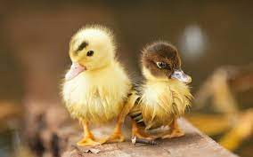 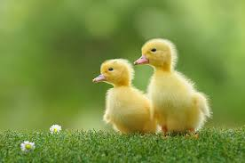 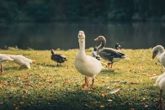 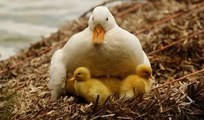